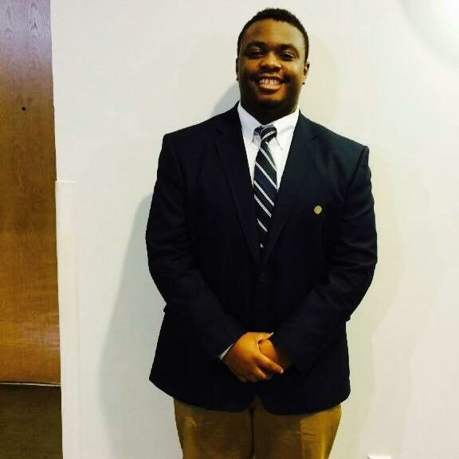

About Me

Hello, my name is Rayshawn Bray. I am an aspiring Front End Software Developer from Atlanta, Georgia. I'm currently a full-time student at Georgia Institute of Technology in their Full Stack Web Development Coding Boot Camp. I have experience using HTML5, CSS, JavaScript, JQuery, and Bootstrap.
While in the program, I discovered a new passion of mine which is coding! This has led me to exploring various careers where I could code and visually see the results. Now, my career goal is to become a full stack web developer! I wanted to attend Georgia Tech’s Full Stack Web Developer bootcamp because it gives me structure and all the skills needed to go into the field. I look forward to starting my career after completion of the bootcamp!